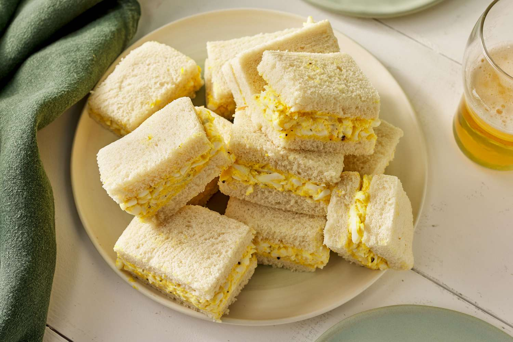

How to make an Egg Salad Sandwich

Description
Make deli-worthy egg salad sandwiches at home with this top-rated egg salad recipe! You'll come back to it again and
again.
Ingredients
- Eggs
- Condiments(mayo/mustard)
- Green onion
- Seasonings
Steps
- Place eggs in a saucepan and cover with cold water. Bring water to a boil and immediately remove from heat. Cover and
let eggs stand in hot water for 10 to 12 minutes. Remove from hot water, cool, peel, and chop.
- Place chopped eggs in a bowl; stir in mayonnaise, green onion, and mustard. Season with paprika, salt, and pepper.
- Stir and serve on your favorite bread, crackers, or salad greens.